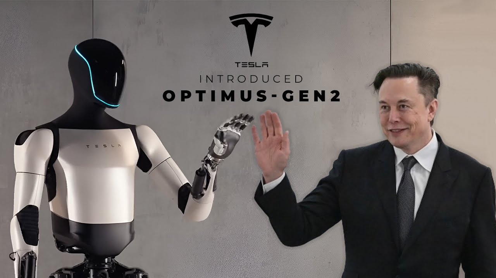

I robot Optimus Gen 2 di Tesla all’evento Cybercab sono agili, ma sono autonomi? Cosa possono fare
I robot umanoidi Optimus Gen 2 di Tesla presentati da Elon Musk all'evento Cybercab camminano, danzano, servono da bere e interagiscono con le persone. Anche se, a detta di alcuni, non erano del tutto autonomi. Elon Musk intende produrli in massa per renderli disponibili a prezzi di 20-30.000 dollari. Un gruppo di robot umanoidi Optimus Gen 2 prodotti da Tesla, l'azienda automobilistica di Elon Musk, ha sfilato a Los Angeles durante l'evento Cybercab dedicato alla presentazione del nuovo Tesla Robovan (una sorta di navetta a guida autonoma). Musk ha approfittato dell'occasione per elogiare le capacità dei suoi robot, sottolineando quanto siano avanzate rispetto al primo prototipo mostrato in pubblico nel 2022. Oggi i robot Optimus possono camminare, svolgere attività quotidiane come portare pacchi o irrigare piante, e persino interagire con le persone: a vederli sembrano in grado di per svolgere compiti domestici. I video diffusi mostrano robot che camminano tra la folla, si cimentano in danze sincronizzate e servono da bere. Da quanto si apprende da alcune fonti online, come The Verge, Tesla avrebbe in parte barato nel fare sfoggio di questi “droidi”, che erano in parte controllati da personale umano.